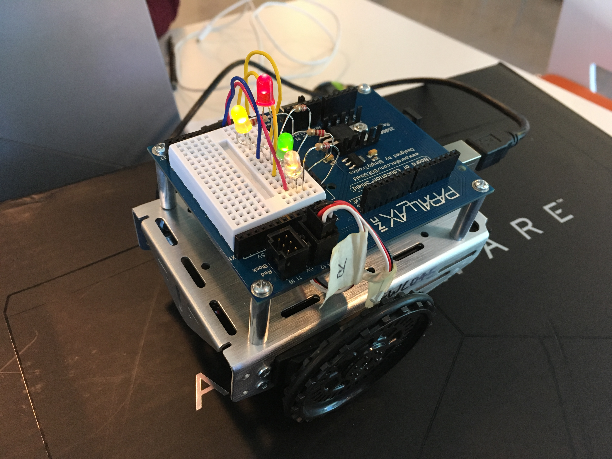

This is my new project: LIGHT SHOW!!. It is a super cool project which requires us to use Arduino to light a series of LED lights. I learnt so many new things from this project like some commands in C++ and how to wire a circuit in the Digital Circuit etc. I am so happy about how the project turned out. The pictures are below.
GALLERY
